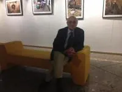

Gaziantep Çalışması 2B

2012 yılında başladığımız Gaziantep Yeraltı Yapıları Envanteri çalışmalarımızı ertesi yıl yayımladığımız bir raporla (www.obruk.org/tr/yayin/41) sonlandırdığımızı düşünüyorduk ki ÇEKÜL Vakfı Gaziantep Koordinatörü Sn. Zafer Okuducu, Gaziantep’in yeraltı yapılarının bu kadar kolay bitemiyeceğini bizlere hatırlattı. Aralık 2015 tarihinde, uzun bir aradan sonra yeniden Gaziantep’te idik. Bu çalışmada 500 metreden fazla bir ölçüm alınan Sacır Mevkii / Sam Mezrası’ndaki livasın ölçümüne sekiz ay sonra kaldığımız yerden devam ettik. Son çalışmamızda bu yeraltı su tüneli 837 metrede GASKI tesislerindeki kuyularda sonlandı ama, civarda birçok livas hattı daha var ve tümü bizleri bekliyor. Ertesi gün Gaziantep’in içinde ve hiç umulmayan bir yerde devasa bir Roma Dönemi yeraltı mezarlığı bulduk. Bulduğumuz bu antik yeraltı yapısı –inanılmaz bir hızla- bir gün sonra Koruma Kurulu kararı ile 1. Derece Arkeolojik SİT alanı olarak ilan edildi. Bu ve diğer çalışmalarımız bir sonraki gün, Gaziantep’te gerçekleşen Tarihi Kentler Birliği Toplantısı’nda Gaziantep Büyükşehir Belediye Başkanı Sn. Fatma Şahin tarafından toplantıya katılan 220 belediye başkanına duyuruldu ve sunumunda, çalışmalarından dolayı OBRUK’a özel olarak teşekkür etti. Tarihi Kentler Birliği’nin yıllık toplantısına katılmamız ayrı bir şanstı. Bu toplantı sırasında birçok belediye başkanından doğal ve yapay birçok mağara ihbarı aldık. Toplantının devamında, daha önce Gaziantep’te gerçekleştirdiğimiz çalışmaların fotoğraflarını içeren bir serginin açılışına katıldık. Fotoğraf sahipleri A.E. Keskin ve Ç. Çankırılı’nın bizlerle birlikte bu sergi açılışına katılamamış olması üzücü idi.Bu faaliyetle ilgili birkaç foto web de.